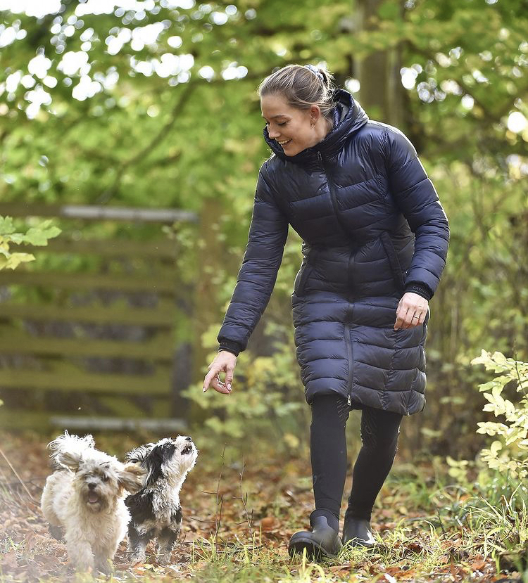

SOBRE/ABOUT
Cathrine Laudrup-Dufour nasceu em 2 de janeiro de 1992, é uma cavaleira olímpica dinamarquesa de dressage. Dufour começou a montar aos 5 anos e juntou-se à equipe nacional de dressage de pôneis da Dinamarca aos 12 anos. Ela ganhou várias medalhas nos campeonatos dinamarqueses e europeus de juniores e jovens cavaleiros. Ela estudou Gestão de Lazer, Gestão de Esportes por um ano na University College Zealand Dufour é lésbica assumida senjo jka casada com Rasmine Laudrup.
Características
- empenhada
- trabalhadora
- alta
- divestida
- olhos claros
- cabelo escuro
Percuso de Carreira
Cathrine representou a Dinamarca, ela competiu nos Jogos Olímpicos de 2016 no Rio de Janeiro, onde terminou em 13º na individual e 6º na competição por equipes . Nos Jogos Olímpicos de Verão de 2020 em Tóquio , ela terminou em 4º lugar nos eventos de dressage individual e em equipe.